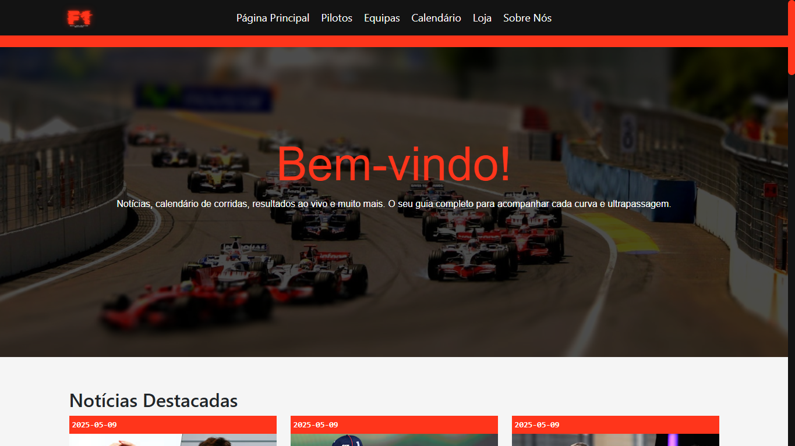
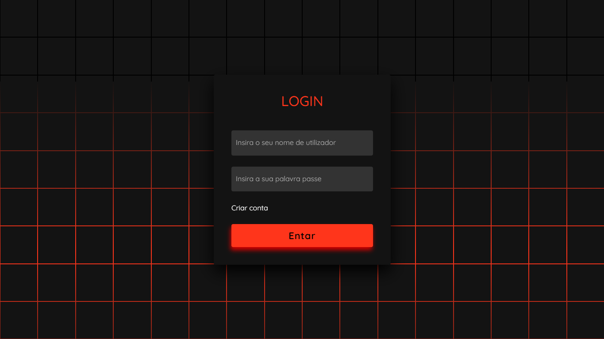

Website de informação sobre Fórmula 1, sustentado por uma base de dados.
Projeto de conclusão do curso de GPSI — Gestão e Programação de Sistemas Informáticos. Aplicação prática de todos os conhecimentos técnicos adquiridos ao longo do 12.º ano, com o objetivo de gerir os diversos recursos e produtos ligados ao mundo da Fórmula 1.
O F1 é um website dedicado à Fórmula 1, com notícias, calendário de corridas, pilotos, equipas e uma pequena loja — tudo sustentado por uma base de dados que permite gerir os diversos recursos e produtos apresentados no site.
O nome atribuído ao projeto foi, simplesmente, F1.
“Website é sustentado por uma base de dados, tornando possível gerir os diversos recursos e produtos.”
Manter os visitantes interessados e envolvidos com o conteúdo sobre Fórmula 1.
Reunir notícias, calendário, pilotos e equipas num único lugar.
Estrutura clara de menus para encontrar rapidamente qualquer secção.
Boa apresentação em qualquer ecrã, de telemóvel a computador.
O design do website foi inspirado no website oficial da Fórmula 1, apostando num contraste forte entre o vermelho de destaque e os tons escuros de fundo.


No desenvolvimento do website tive algumas dificuldades em PHP, mas com a ajuda dos professores, colegas de turma e de muita pesquisa consegui ultrapassá-las.
Neste projeto melhorei os meus conhecimentos em PHP, HTML, CSS e JavaScript.
A concretização deste projeto, o mais desafiador que já realizei, foi extremamente gratificante, pois proporcionou-me a oportunidade de aplicar, de forma prática e relevante, os conhecimentos adquiridos ao longo do curso.
Este projeto reforçou a minha confiança e aprimorou a minha habilidade de gerir projetos complexos, ajudando-me a estar mais preparado para os desafios do mercado de trabalho.